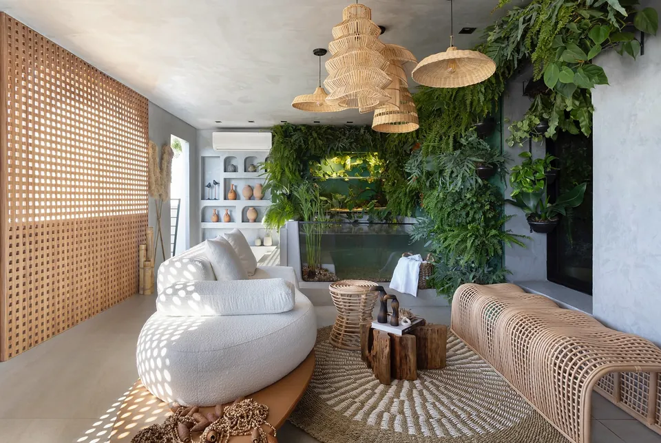

Refúgio da Chef Indígena
Ambiente da CASACOR Ribeirão Preto 2023 em homenagem à chef Kalymaracaya Nogueira, descendente do povo Terena. O conceito é a biofilia: a natureza dentro de casa, com madeira, fibras naturais e muitas plantas.
- Mostra
- CASACOR Ribeirão Preto 2023, tema Corpo & Morada
- Ambiente
- Loft com cozinha, sala e jardim vertical
- Prêmios
- quais prêmios e de quem